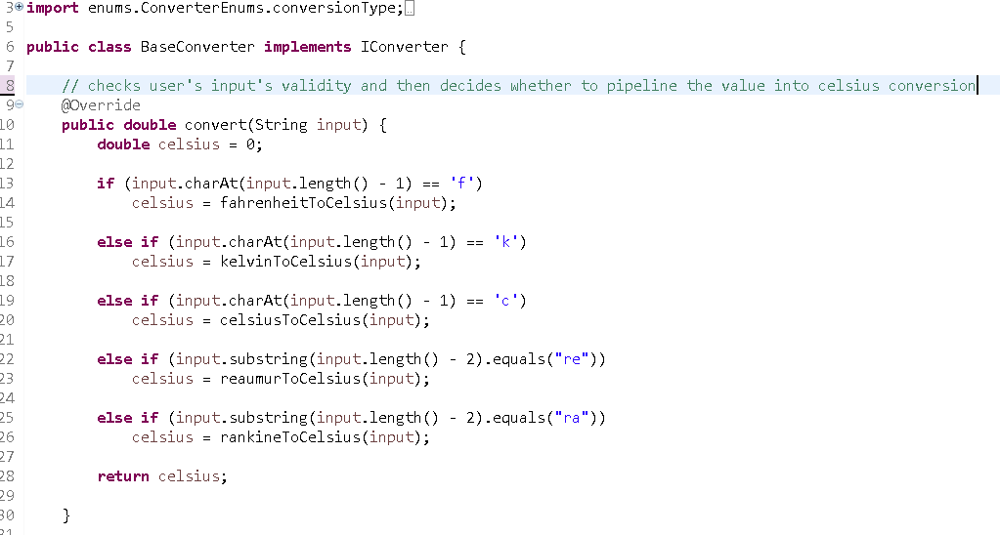
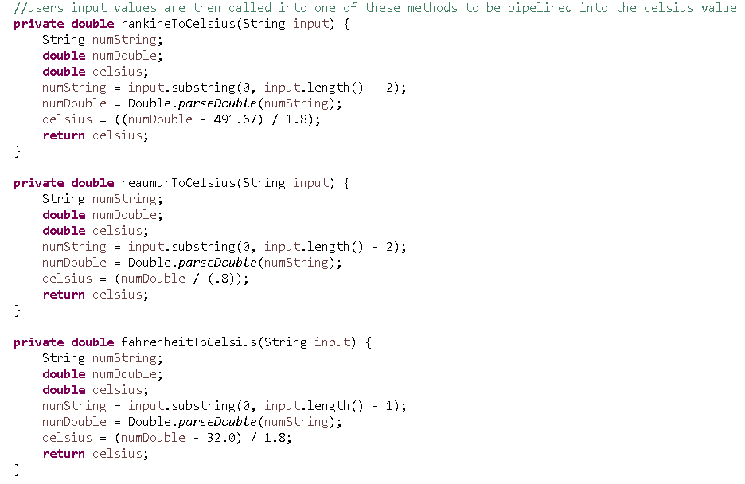
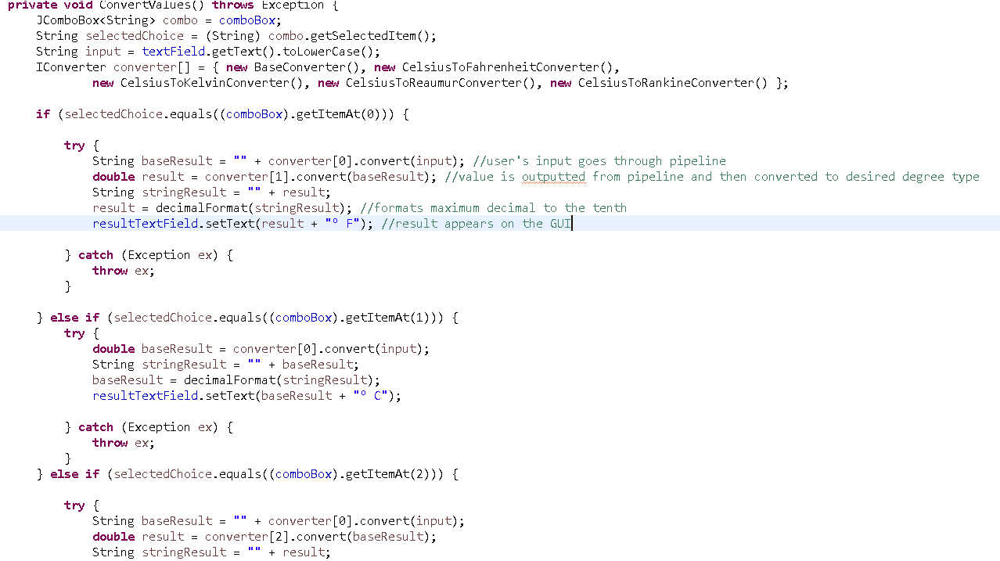
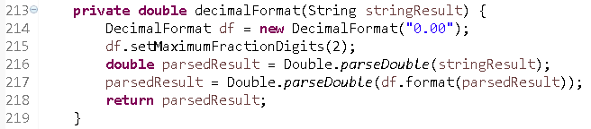

Here are some screenshots of my Java project: Temperature Converter
My first self assigned GUI project was this temperature conversion program. In the first screen, a user can enter any numerical value ending with char 'c' (celsius), 'f' (fahrenheit), 'k' (kelvin),'ra' (rankine), or lastly 're' (reaumur) in the first textfield. In the second screen, the user can click on the combobox and choose any of the desired options listed in the drop-down menu. Lastly, in the third screen, the user can press the "Convert!" button to display the resulting value.

Here's a snippet of the source code. I created a convenient pipelining system to first convert any valid temperature input value into its celsius equal. Reason: this is more convenient, quicker, and less messy to code rather than writing out every back-and-forth temperature conversion formula/algorithm. Saves time and gets the same job done.

And here are some of the actual formulas I wrote out in my program to pipeline whatever value into its celsius measurement.

Some parts of the GUI source code - Combobox, setting of the result textfield. First element/option of the "combobox" is the "pipeline converter". Always calling that conversion first, the input value will be ran first into the pipeline system and then from there, converted to whatever desired value.

Used a decimal format to output a clean looking result that doesn't run off with many decimal places.